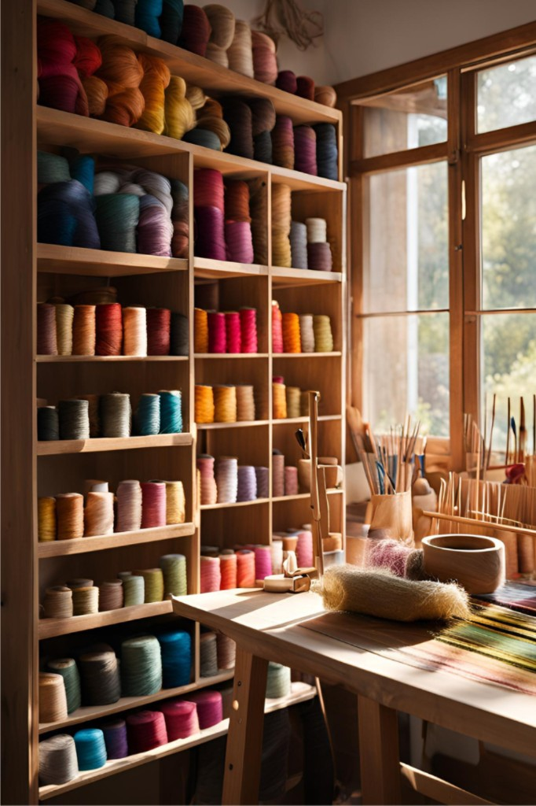

О мастерской
Как появилась knit.katarina — путь от первой петли до игрушек и букетов ручной работы.
История, связанная петля за петлёй
Долгое время мне хотелось начать вязать игрушки — мягких зайчиков, мишек и других маленьких персонажей, которые будто оживают в руках. Мечта жила тихо, а однажды, семь лет назад, я всё-таки взяла крючок.
Но первый же день оказался трудным: ничего не слушалось, петли путались, и я решила, что это «слишком сложно». Отложила пряжу — и надолго забыла о своей идее.
Два года назад решилась попробовать снова. Сначала получалось неровно и неуверенно. Зато с каждой новой игрушкой был виден прогресс: ровнее петли, аккуратнее детали, и сами игрушки становились всё милее. Так пришло понимание — я хочу не просто вязать для себя, а дарить людям радость: делать изделия на заказ, вкладывать в них внимание и настроение.
Позже к игрушкам добавились вязаные букеты цветов — нежные, долговечные и особенные, как и всё, что рождается в этой мастерской. Сегодня knit.katarina — пространство, где каждая вещь существует в одном экземпляре и создаётся вручную, с теплом и любовью к деталям.
Заказать на заказ
Как создаются изделия
- Идея и настроение будущего персонажа или букета
- Подбор пряжи и оттенков
- Ручная работа без серийного тиража
- Последние штрихи и аккуратная упаковка